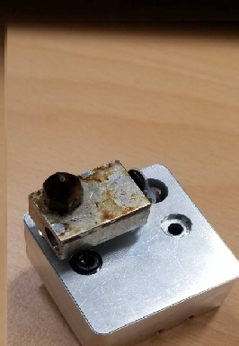

・下の写真はフィラメントをノズルに押し込んでいく歯車です。この時は、すでにノズルが詰まっていたため歯車が空回りしています。
そのため押さえつけられているフィラメントが削られ、溝に詰まっている様子が見てわかります。

・まずは歯車全体が見えるように黒いパーツを分解していきます。

・細く硬めの素材のもので詰まったフィラメントを除去し綺麗にして完成です。

・このノズルパーツを交換していきます。
